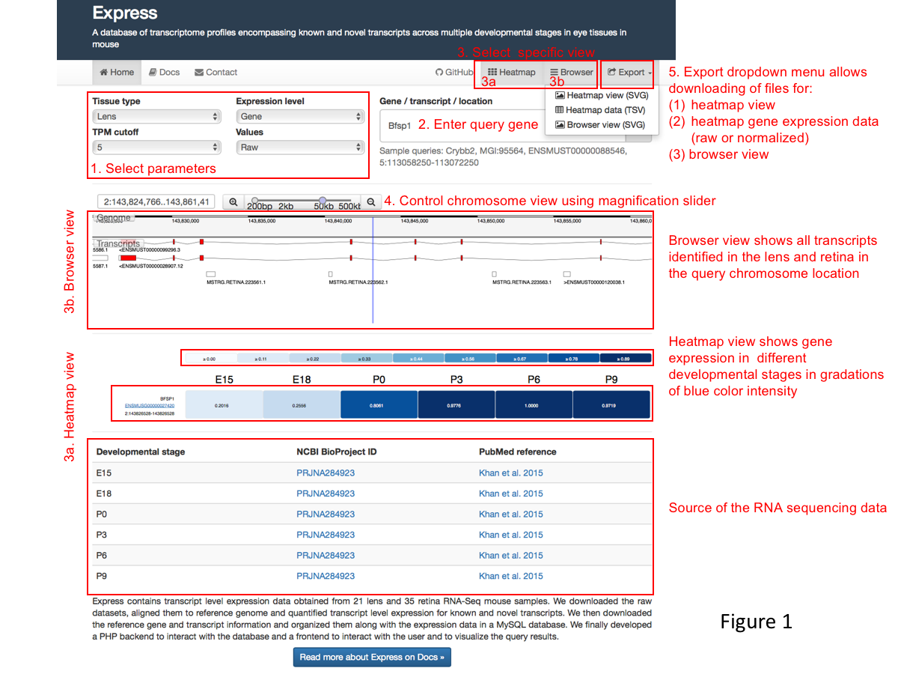
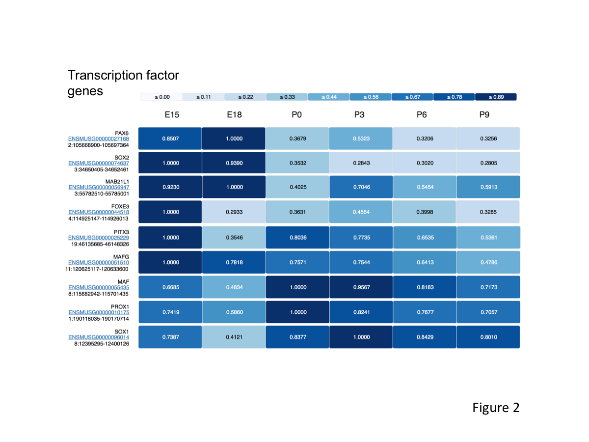
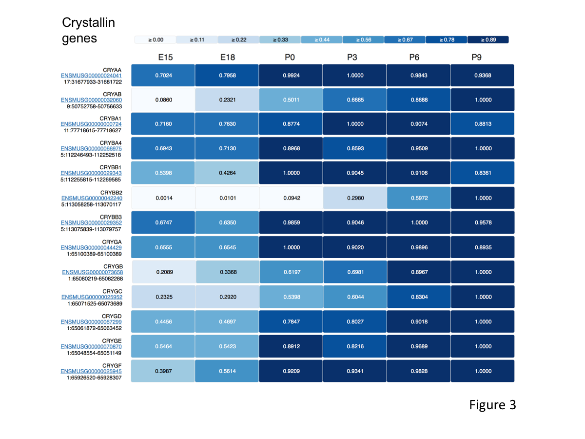
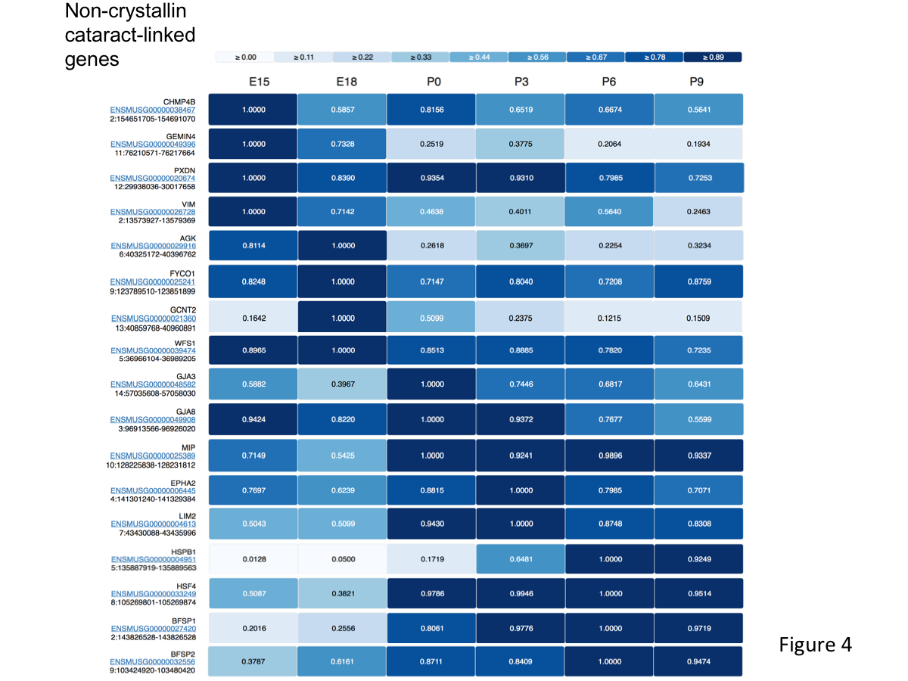

Figure 1. User guide for application of Express to investigation eye gene expression. 1. User selects parameters, 2. Enters query gene or chromosomal region, 3. Selects view options, 3a. with heatmap view can visualize gene expression in various developmental stages, 3b. with Browser view can visualizes different transcripts, 4. Uses magnification slider to controls chromosomal range, 5. Can use the Export dropdown menu to download heatmap view, raw or normalized gene expression data or browser view.
Figure 2. Express-based analysis of gene expression for transcription factors functional in lens development. Express re-captures the general expression trends in developing lens tissue for various transcription factors. For example, Pax6, Sox2, Mab21l1, Foxe3, Pitx3 and Mafg exhibit high expression in early (embryonic) lens development stages compared to late (postnatal) stages. In contrast, Maf, Prox1, and Sox1 expression is lower in early lens developmental stages and higher in later stages.
Figure 3. Express-based analysis of gene expression for Crystallin genes in lens development. Express shows increased expression of Crystallin genes in postnatal stages compared to embryonic stages in developing lens tissue.
Figure 4. Express-based analysis of gene expression for non-crystallin cataract-linked genes in lens development. Express shows high expression of various non-crystallin genes that are linked to human congenital/pediatric cataract. For example, Chmp4b, Gemin4, Pxdn, Vim, Agk, Fyco1 and Wfs1 are expressed highly in early embryonic stages, while Epha2, Gja3, Gja8, Lim2, Mip, Bfsp1 and Bfsp2 exhibit high expression in late embryonic and postnatal stages.
Please cite Express in your publications as:
Budak, G., Dash, S., Srivastava, R., Lachke, S. A., & Janga, S. C. (2018). Express: a database of transcriptome profiles encompassing known and novel transcripts across multiple development stages in eye tissues. Experimental eye research, 168, 57-68.